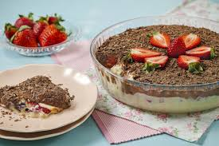
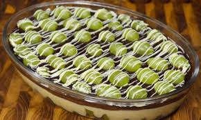

Bombom de travessa de Morango
postado em 08 de junho de 2024 Ingredientes:1 lata de leite condensado, 2 colheres de sopa de margarina ou manteiga, 2 latas de creme de leite, 200 gramas de chocolate ao leite picado, 1 caixa de morangos. Em uma panela, coloque 1 lata de leite condensado, 2 colheres de sopa de manteiga ou margarina e mexa sem parar até soltar do fundo da panela. Desligue o fogo, adicione 1 lata de creme de leite e misture. Reserve. Derreta 200 gramas ao leite picado em banho-maria ou no micro-ondas. Em seguida, adicione 1 lata de creme de leite e misture. Em um refratário, coloque a mistura branca. Depois, faça uma camada com os morangos. Em seguida, despeje o chocolate e leve para gelar. Se quiser, coloque mais morangos. Sirva em seguida.
Leia maisBombom de travessa de Uva
postado em 08 de junho de 2024 Ingredientes:700 g de uva thompson 2 latas de leite condensado, 1 e 1/2 caixa de creme de leite 1 colher (sopa) de margarina, 200 g de chocolate meio amargo. Solte as uvas do cacho, lave-as, seque bem e reserve. Modo de Preparo: Em uma panela, coloque o leite condensado e a margarina e leve ao fogo médio mexendo sempre até soltar do fundo da panela. Deixe esfriar, adicione 1/2 caixinha de creme de leite e reserve. Em uma panela, quebre o chocolate em pedaços e leve ao fogo em banho-maria até que esteja completamente derretido. Acrescente o creme de leite e misture bem. Em um refratário, coloque todo o creme branco, forre o creme com as uvas e despeje a ganache de chocolate por cima. Leve à geladeira, decore como desejar e sirva gelado. Bom apetite!
Leia mais